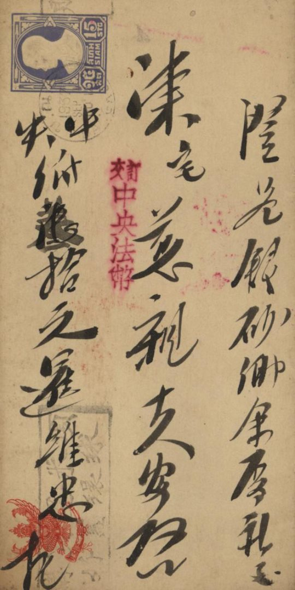
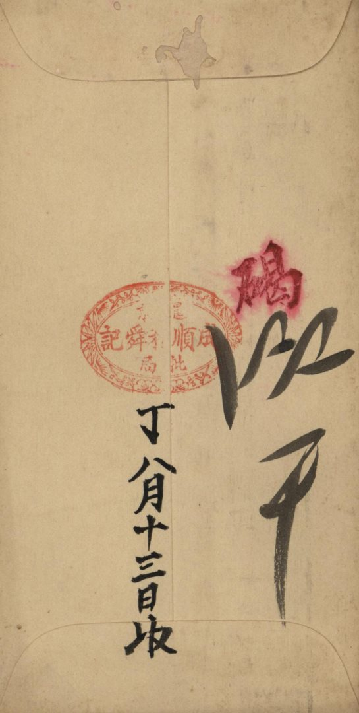
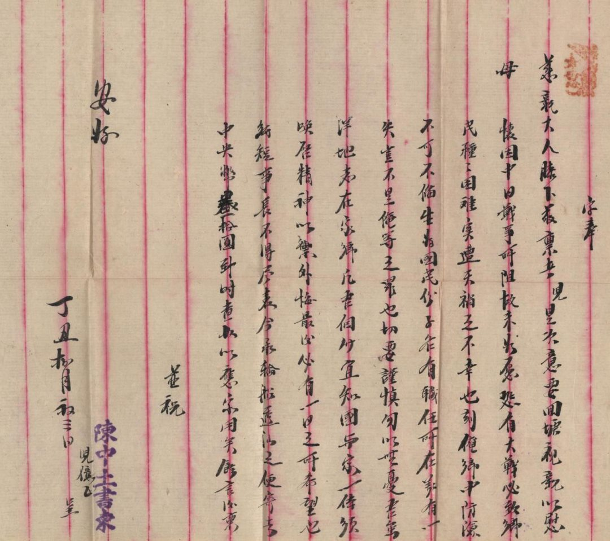

目录
首页

第 四 章
吾虽洋地
志在家乡
抗日战争时期潮汕侨批（二）
"凡吾个人宜知国与家一体，须唤启精神，以御外侮，最后必有一日之所希望也……"
在汕头市档案馆馆藏侨批中，有一封泰国华侨陈维忠1937 年寄给母亲的侨批，他因中日战事所阻而无法回乡探亲，信中满载着他对家乡的担忧和对家人的思念，更满载着他浓浓的家国情怀和顽强的斗争意志。
馆 藏 原 件
丁丑捌月初三日 · 泰国华侨陈维忠寄母亲书（封面）
信 封 背 面

丁丑捌月十三日收 · 汕头顺成批局戳记
字奉慈亲大人膝下：
敬禀者，儿是次要回塘（1）视亲以慰母怀，因中日战争所阻，故未如愿。恐有大战必致乡民种种困难，实遭天祸之不幸也。刻俺乡中防险，不可不备。
生为国民份子，各有职任所在，若有一失，岂不是俺等之罪也？切要谨慎，勿以无忧。吾虽洋地，志在家乡。凡吾个人宜知国与家一体，须唤启精神，以御外侮，最后必有一日之所希望也。
纸短事长，不得尽表。今承轮船透汕之便，寄去中央币（2）叁拾元，到时查收，以应家用矣。余言后禀。
并祝安好！
丁丑捌月初三日呈
儿亿飞（陈维忠）
信 纸 内 页

原信内页 · 末署"陈维忠书信"
（1）塘：华侨、华裔对中国一种习惯称呼。也作"唐""唐山"。
（2）中央币：国民政府中央银行发行的纸币。也作"中央票""中央国币""中央纸""中央法币""中央银"。
信中，华侨陈维忠因战事受阻，未能如愿回乡探亲，他借此想到"恐有大战必致乡民种种困难，实遭天祸之不幸也"，可见他已不是局限于对家庭的关心，而是对整个家乡的热爱，正如他所说"吾虽洋地，志在家乡"。
并且，他更是嘱咐家人"切要谨慎"，不可麻痹大意，用"若有一失，岂不是俺等之罪也"强调了此时此刻提高警惕是身为"国民份子"的义务所在。同时，他强调家国一体，"凡吾个人宜知国与家一体"，国家的事情也是每个人的事情，要时刻与国家同荣辱、共命运。
最后，他充满希望地写到"须唤启精神，以御外侮，最后必有一日之所希望也"，这句话更是把他顽强的斗争精神体现出来。虽然抗日战争胜利已过去了78年，但是海外侨胞在国难当头，与家乡人民同仇敌忾纷纷捐款支援抗战的举动，他们"虽在洋地，志在家乡"的情怀早已铭刻在家乡人民的记忆之中。